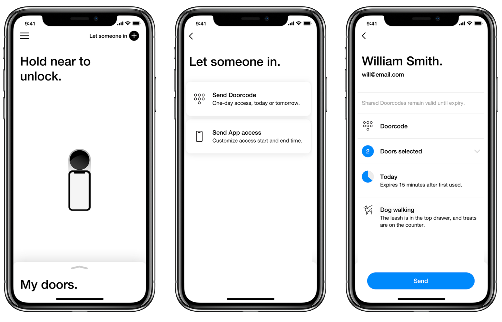

Click anywhere to close
Click anywhere to close
Latch makes keyless entry systems for residential apartment buildings. I was a product manager there from 2018–2019.
For most of my time at Latch, I was responsible for the Latch mobile app, which residents use to lock and unlock doors to their unit and to shared common spaces, as well as to share access with guests and service providers like deliverypeople and dogwalkers.
I oversaw the rollout of version 2.0 of the app, which featured a complete redesign based on user feedback, a simplification of the share access feature, and the introduction of shared access for service providers. I also helped drive our average App Store rating to four stars from 2.5 (though it has since gone back down in the intervening year).